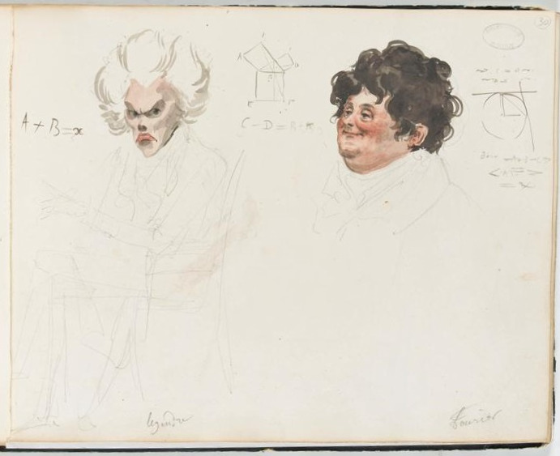

A convex function can be assembled from affine supporting functions. Optimal transport replaces affine supports by translated profiles of a cost. This seemingly modest change produces cost-concave potentials, the functions appearing in the Kantorovich dual problem [1], [6].
Here is a natural test of how different the new geometry is. If two functions are cost-concave, is their average still cost-concave? For quadratic cost in Euclidean space, yes. For most other power costs, no—even on an interval. Squared geodesic distance on a round sphere gives a surprising positive example. Throughout, “average” means an arithmetic average of functions, not a Wasserstein barycenter of measures.

One inequality defines the transform
Let \(X,Y\) be compact spaces and \(c:X\times Y\to\mathbb R\) continuous. Initially take a finite continuous \(f\). A feasible dual pair satisfies \(f(x)+g(y)\le c(x,y)\). For fixed \(f\), its largest feasible partner is
\[ f^c(y)=\inf_{x\in X}\{c(x,y)-f(x)\}. \]The reverse transform uses the transposed cost \(\bar c(y,x)=c(x,y)\):
\[ g^{\bar c}(x)=\inf_{y\in Y}\{c(x,y)-g(y)\}. \]A function of the form \(g^{\bar c}\) is c-concave. It is a lower envelope of cost profiles. At a contact point, an individual profile touches it from above: this reverses the familiar picture of affine supports beneath a convex function.
Proposition 1 (closure by double transformation). The transform reverses order, and
\[ f^{c\bar c}\ge f,\qquad f^{c\bar c c}=f^c. \]The double transform is the smallest c-concave majorant of \(f\). In particular, \(f\) is c-concave exactly when \(f=f^{c\bar c}\).
Proof: use feasibility twice
Feasibility says \(f(x)\le c(x,y)-f^c(y)\) for every \(y\); take the infimum to get \(f\le f^{c\bar c}\). Applying the order-reversing transform gives \(f^c\ge f^{c\bar c c}\). Applying the same double-transform inequality to \(f^c\) gives the reverse inequality, hence the triple identity.
Every transformed function is therefore fixed by double transformation. Finally, if a c-concave \(h\) majorizes \(f\), monotonicity of the double transform gives \(h=h^{c\bar c}\ge f^{c\bar c}\). \(\square\)
Recovering ordinary conjugacy
On full dual Euclidean spaces, the convex conjugate is \(h^*(y)=\sup_x\{x\cdot y-h(x)\}\). Our infimum convention differs by signs. For the pairing cost \(c(x,y)=x\cdot y\),
\[ f^c(y)=-(-f)^*(-y),\qquad f^{c\bar c}=-(-f)^{**}. \]Under the properness assumptions of Fenchel–Moreau biconjugacy, the last expression is the closed concave envelope above \(f\). One should not silently identify this infimum transform with the usual supremum Legendre transform [2].
For the quadratic cost \(c(x,y)=\tfrac12|x-y|^2\) on \(\mathbb R^d\times\mathbb R^d\), let \(h(x)=\tfrac12|x|^2-f(x)\). Completing the square gives
\[ f^c(y)=\tfrac12|y|^2-h^*(y),\qquad f^{c\bar c}(x)=\tfrac12|x|^2-h^{**}(x). \]Thus, in the proper closed setting, c-concavity is exactly convexity of \(h\). If \(f_0,f_1\) are c-concave, then
\[ \tfrac12|x|^2-\bigl((1-t)f_0+tf_1\bigr) =(1-t)h_0+th_1 \]is convex. This proves averaging stability. Restrictions on the target domain restrict the allowed supporting slopes; the full-space characterization cannot simply be reused with an arbitrary target subset.
A different positive example: metric costs
Proposition 2 (metric potentials). On the same compact metric space \(X=Y\), with \(c=d\), c-concave functions are precisely the 1-Lipschitz functions. Consequently their convex combinations are c-concave.
Proof: the triangle inequality identifies the whole class
Each profile \(x\mapsto d(x,y)-g(y)\) is 1-Lipschitz, and so is its finite lower envelope. Conversely, if \(f\) is 1-Lipschitz, then \(d(x,y)-f(x)\ge-f(y)\), with equality at \(x=y\). Hence \(f^d=-f\), and \(f^{dd}=f\). \(\square\)
For an arbitrary finite input, one can also write \(f^{dd}(x)=\sup_y\{f(y)-d(x,y)\}\): this is its smallest 1-Lipschitz majorant. In particular, \(|x-y|^p\) with \(0<p\le1\) is a metric, so averaging is stable in that range too. Geodesic distance itself poses no curvature restriction; the subtlety starts when one squares it.
Two short counterexamples cover every other power
Theorem 1 (power costs on an interval). Let \(X=Y=[-3,3]\) and \(c_p(x,y)=|x-y|^p\), with \(p>0\). The class of c-concave functions is closed under arithmetic convex combinations if \(0<p\le1\) or \(p=2\). For every other exponent, a mean of two individual cost profiles already fails to be c-concave.
The metric argument proves the first range. For \(p=2\), the allowed centers form the convex interval \([-3,3]\). At each point an average of two supporting parabolas is itself a parabola, up to a constant, centered at the average of their centers; that center remains in the interval.
Proof of failure: a supporting profile has too little curvature
Each \(f_i(x)=c_p(x,y_i)\) is c-concave: it has itself as a cost-profile support at every point. If their smooth average \(f\) were c-concave, compactness and continuity of \(f^c\) would provide a profile \(c_p(x,y_*)+a\) touching it from above at zero. Necessarily
\[ f'(0)=\partial_xc_p(0,y_*),\qquad f''(0)\le\partial_{xx}c_p(0,y_*). \]When \(p>2\). Choose \(f(x)=\tfrac12(|x-1|^p+|x+1|^p)\). Its zero derivative forces \(y_*=0\), but
\[ f''(0)=p(p-1)>0=\partial_{xx}c_p(0,0), \]a contradiction.
When \(1<p<2\). Choose \(f(x)=\tfrac12(|x+1|^p+|x+2|^p)\). The derivative fixes \(y_*=-r\), where
\[ r=\left(\frac{1+2^{p-1}}2\right)^{1/(p-1)}. \]Since \((p-2)/(p-1)<0\), strict convexity of this negative power and Jensen give
\[ \frac{1+2^{p-2}}2 >\left(\frac{1+2^{p-1}}2\right)^{(p-2)/(p-1)} =r^{p-2}. \]After multiplication by \(p(p-1)\), this says the average has greater curvature than its only possible touching cost profile. Both profiles are smooth near zero because \(r\ne0\). Again there is a contradiction. \(\square\)
Why the sphere is a genuine exception
For squared intrinsic geodesic distance on a round sphere, arithmetic combinations of finite c-concave functions are c-concave. The property extends to products of round spheres, including flat tori with their product metrics [3], [4]. Chordal distance from an ambient embedding is a different cost.
The key ingredient is a supporting-profile inequality, not merely positive sectional curvature. Fix a contact point \(x_0\), interpolate shortest logarithms to two centers, and define
\[ y_t=\operatorname{Exp}_{x_0}\bigl((1-t)\operatorname{Log}_{x_0}y_0+t\operatorname{Log}_{x_0}y_1\bigr), \qquad q_t(x)=c(x,y_t)-c(x_0,y_t). \]On these spaces, with the cut-locus cases obtained by limits,
\[ q_t(x)\ge(1-t)q_0(x)+tq_1(x). \]How the supporting-profile inequality proves averaging stability
If \(q_i(x)+f_i(x_0)\) supports \(f_i\) from above, then
\[ (1-t)f_0(x)+tf_1(x) \le (1-t)f_0(x_0)+tf_1(x_0)+q_t(x). \]Equality holds at \(x_0\). Thus the average has a cost-profile support at every point. Taking the lower envelope of all these supports recovers the average, proving c-concavity. The geometric inequality itself is the substantive theorem of Kim and McCann; it is not proved by this elementary envelope argument. \(\square\)
For smooth costs on bounded Euclidean domains, Figalli, Kim, and McCann characterize this convexity of the potential class by nonnegative cross-curvature, under bi-twist, nondegeneracy, and convexity of the cost-gradient images [5]. This condition is stronger than weak Ma–Trudinger–Wang. It is precisely the kind of global hypothesis that the two elementary power-cost counterexamples warn us not to omit.
Numerical experimentation
The panels below compute the transform and double transform of an editable function. The presets are the two averages in Theorem 1; they are regenerated for the selected exponent. The orange curve lies above the input and coincides with it exactly when the finite-grid function is c-concave. Refine the target grid before interpreting a tiny gap as a continuum obstruction.
References
- Gabriel Peyré. Optimal Transport for Machine Learners. Book manuscript, 2025–2026.
- R. Tyrrell Rockafellar. Convex Analysis. Princeton University Press, 1970.
- Young-Heon Kim and Robert J. McCann. Towards the smoothness of optimal maps on Riemannian submersions and Riemannian products (of round spheres in particular). Journal für die reine und angewandte Mathematik 664, 1–27, 2012.
- Samuel Cohen, Brandon Amos, and Yaron Lipman. Riemannian Convex Potential Maps. ICML, PMLR 139, 2028–2038, 2021.
- Alessio Figalli, Young-Heon Kim, and Robert J. McCann. When is multidimensional screening a convex program? Journal of Economic Theory 146(2), 454–478, 2011.
- Cédric Villani. Optimal Transport: Old and New. Springer, 2009.